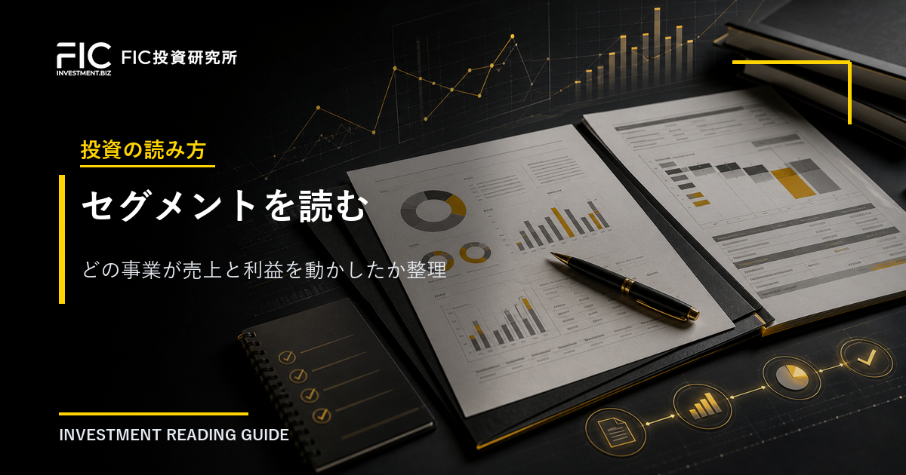
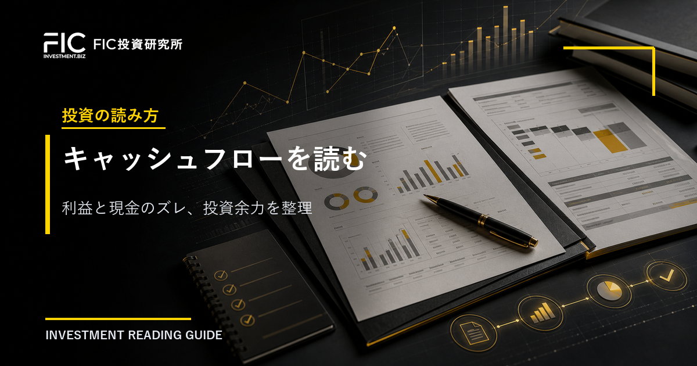
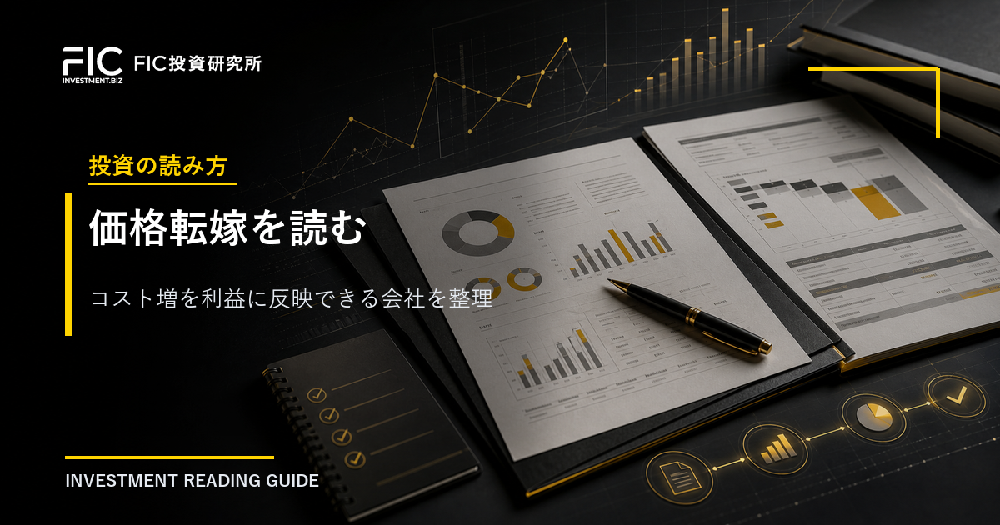
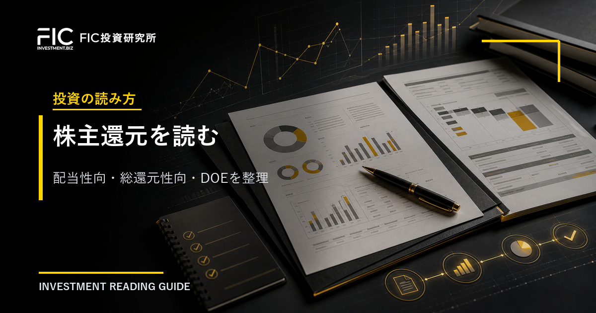
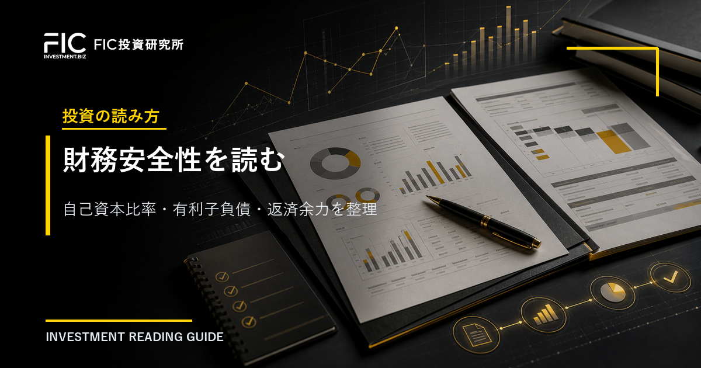

Article Preview Index
WordPress publication preview for investment-reading and theme-reading articles.
1 / 投資の読み方決算短信の読み方｜最初に見るべき5つのポイントをFIC流に整理
2 / 投資の読み方営業利益率とは何か｜売上が伸びても利益が増えない理由を読む
3 / 投資の読み方受注残と在庫の見方｜業績の先行指標として何を確認するか
4 / 投資の読み方ROEとROICの違い｜自己資本の効率と事業の稼ぐ力を分けて読む

5 / 投資の読み方セグメント情報の読み方｜どの事業が売上と利益を動かしたかを見る
6 / テーマの読み方金利上昇で見る企業影響｜銀行・不動産・リース・成長株のどこに効くか
7 / テーマの読み方為替で業績が動く企業の見方｜円安・円高が売上と利益にどう効くか
8 / テーマの読み方原材料高と価格転嫁｜コスト増を利益に反映できる企業を読む
9 / テーマの読み方半導体投資の波及先｜装置・部材・電力・建設へどう広がるか
10 / テーマの読み方政策・補助金テーマの読み方｜国策ニュースを企業業績へどうつなげるか
11 / テーマの読み方物流改革と2024年問題｜物流費・値上げ・省力化へどう広がるか

12 / 投資の読み方キャッシュフロー計算書の見方｜利益と現金のズレを読む
13 / 投資の読み方中期経営計画の見方｜会社計画の前提と達成条件を読む

14 / 投資の読み方価格転嫁とは何か｜コスト増を利益に反映できる会社を読む
15 / 投資の読み方進捗率の見方｜会社予想に対して決算が順調かを読む
16 / 投資の読み方のれんと減損の見方｜M&A後の利益リスクを読む

17 / 投資の読み方配当性向と総還元性向の見方｜株主還元の余力を読む

18 / 投資の読み方自己資本比率と有利子負債の見方｜財務安全性を読む
19 / テーマの読み方エネルギー転換と電力投資｜送配電・蓄電・設備投資へどう広がるか
20 / テーマの読み方人手不足と省力化投資｜自動化・IT・外注需要へどう広がるか
21 / テーマの読み方値上げと消費者需要｜客数・客単価・数量減をどう読むか
22 / テーマの読み方インバウンド需要の読み方｜訪日客・免税・ホテル・鉄道へどう広がるか
23 / テーマの読み方防衛・安全保障投資の読み方｜防衛費・装備品・IT・造船へどう広がるか